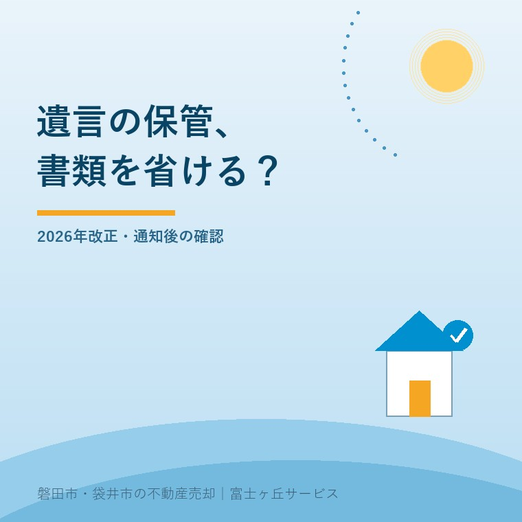

遺言書保管事実証明書、2026年の書類省略
2026年10月2日｜カテゴリ：相続・書類準備

この記事の要点
親の遺言の通知が来た。保管の有無を調べるために、除籍謄本を取り直すの？
指定者通知が送付済みなど、保管所に死亡が記録されている一定の場合は、遺言書保管事実証明書の請求で死亡証明書類等を省略できます。請求人の資格や省略できない書類は確認が必要です。磐田市・袋井市・森町では、介護施設の運営から不動産事業を始めた富士ヶ丘サービスのような「介護×不動産」専門の会社に相談する選択肢があります。
大石浩之（磐田市／不動産業）です。親の遺言について通知が届いたとき、家族が最初からすべての戸籍を取り直すとは限りません。保管の有無を調べる段階と、遺言の内容を読んで実家の相続を進める段階では、確認する目的が異なります。
本記事は2026年10月2日確認の法務省資料から、遺言書保管事実証明書の必要書類の省略を整理します。個々の家族の相続人資格をここで判定する記事ではありません。通知の種類と請求する証明書をそろえて、取得前に聞くための案内です。
2026年3月2日改正で、死亡確認の重複を減らす
法務省の「法務局における遺言書の保管等に関する省令の一部を改正する省令」の概要は、令和8年法務省令第8号が2026年3月2日に公布・施行されたと説明しています。請求書の記載事項と添付書類を省略できる範囲が拡大しました。
資料5頁では、指定者通知が送付されている場合など、保管所に遺言者の死亡が記録されている一定の場合を示しています。遺言者とは遺言を残した人です。指定者通知は、その人が指定した方への通知を指し、家族が自由に名付けた連絡のことではありません。
私は、保管所がすでに確認した死亡の事実について、家族が同じ証明を重ねて用意する負担を減らす点を評価します。戸籍を取りに行く人、郵送の手配をする人、請求する人が別なら、書類一枚でも連絡の往復が生まれます。省略できる条件が示されたことには実利があります。
その上で、「2026年から戸籍は不要」という受け取り方には注文があります。何を請求し、どの資格で請求するかによって必要書類は変わります。死亡を証明する書類の省略を、相続関係を調べなくてよいという話に広げないことです。
資料の公表日は確認できていません。2026年3月2日は公布・施行日として記します。制度の入口を知りたい方は、自筆証書遺言の自宅保管と法務局保管を比べた記事も参照できます。本記事の中心は、死亡後に保管状況を確認する請求です。
事実証明書と情報証明書を取り違えない
遺言書保管事実証明書は、遺言書が保管されているかを確認するための証明書です。遺言内容を確認する遺言書情報証明書とは役割が異なります。実家を誰が受け継ぐかを調べたいのに、保管の有無だけの書類で判断を終えないようにします。
| 確認したいこと | 資料上の手続き | 取り違えない点 |
|---|---|---|
| 保管されているか | 遺言書保管事実証明書の交付請求 | 遺言内容の証明書とは別 |
| 遺言の内容 | 遺言書情報証明書の交付請求等 | 事実証明書の省略条件をそのまま移さない |
| 申請時の住所・本籍等 | 申請書類の閲覧請求 | 特別の事由がある場合の手続き |
法務省資料の活用例は、指定者通知を受けた人が、自分が相続人・受遺者等・遺言執行者等に当たる遺言かを確かめるため、事実証明書を請求する場面を挙げています。受遺者は遺言によって財産を受ける人、遺言執行者は遺言の実現に必要な手続きを担う人です。
意外なのは、事実証明書の交付請求自体は誰でもできると資料にあることです。ただし、今回の記載・添付の省略は、通知を受けた人、相続人、受遺者等、遺言執行者等に当たる場合に限られます。「請求できる」と「書類を省ける」は別の条件です。
指定者通知を受けたことだけで、実家を受け継げるとは判断しません。どの証明書で何を確認するかを保管所へ聞き、遺言の読み方や相続の争いは弁護士等に相談します。相続・登記の個別判断は専門家に確認を。
省ける書類と残る書類を分ける
法務省資料6頁の一覧表は、遺言者の最後の住所、本籍、死亡年月日の記載と、死亡を証明する書類の添付について、一定の場合の省略を示しています。除籍謄本等は死亡の証明として用いられる書類の例です。手元にないから無条件で省けるのではありません。
| 項目 | 省略の扱い | 請求前の確認 |
|---|---|---|
| 最後の住所・本籍・死亡年月日 | 死亡が記録された一定の場合に省略可能 | 通知の種類と請求人の資格 |
| 遺言者の死亡証明書類 | 同じく一定の場合に省略可能 | 今回の請求が条件を満たすか |
| 遺言者の氏名・生年月日 | 省略不可 | 正確な表記を確認 |
| 請求人に関する事項・氏名住所の証明書 | 省略不可 | 必要な種類と提出方法を確認 |
相続人資格を証明する書類の省略は、死亡証明の省略とは別の欄です。関係遺言書保管通知がされている場合などの条件があり、遺言者の一次相続人を証明する部分に限ると注記されています。二次以降の相続人等では、保管所に記録がない相続関係について別途証明が必要です。
私は、指定者通知を受けたという一点から、相続関係の戸籍も全部なくなるとは案内しません。書類には「死亡を示す」「誰が請求人か示す」「相続人資格を示す」という役割があります。同じ戸籍が複数の役割を持っていても、今回省ける役割を一つずつ確かめます。
法人・団体の請求や法定代理人による請求には、該当する資格証明書類もあります。家族の名前で請求するつもりが、代理する人の手続きになっている場合も、必要事項を勝手に読み替えません。法務省の表を開き、窓口に請求の形を伝える方が確実です。
磐田・袋井の相続準備は、取得前の電話から
磐田市・袋井市の実家の相続準備では、市役所で取る証明書と、遺言書保管所へ出す請求を分けて予定を組みます。以下は地域で新しい特例があるという話ではなく、家族が出向く回数を減らすための私の段取りの提案です。
私はこう考えます。戸籍を取りに走る前に、何を省けるか聞く。家族の足を無駄に使わせたくない。親の書類を集める役が一人に集中しているなら、通知の写真を家族で共有し、誰が照会し、誰が取得するかを分けます。まず証明書の名前と目的を一致させます。
私も、最初から相続全体の戸籍を集める方が後で役立つのか、今回の請求分だけに絞る方がよいのか、迷うところがあります。すでに司法書士等へ依頼しているなら、別々に取り寄せず必要範囲を合わせます。省略できる書類を取ってはいけないという話ではなく、重複取得を避ける判断です。
相続関係の資料を他の手続きにも使う場合は、法定相続情報の番号と書類を扱った記事も参考になります。ただし、別の制度で利用できる資料が、そのまま今回の請求書の添付を代替すると決めつけません。提出先ごとに確認します。
照会では「指定者通知を受けた。事実証明書を請求したい。省略できる記載と添付は何か」と伝えます。最後に請求人の氏名・住所を証明する書類、窓口か郵送か、使用する請求書の様式も聞きます。住所や本籍を調べる必要が残ったら、その確認方法を尋ねます。
今日の準備は、通知と請求目的の照合
今日そろえるのは、受け取った通知、遺言者の氏名・生年月日、自分の請求目的、手元の証明書の一覧です。必要な添付が確定してから取得を手配すれば、通知から先の作業が具体的になります。ここで実家を売るかどうかまで決める必要はありません。
- 通知の名称と差出元を確認する。
- 保管の有無か、遺言内容か、確認の目的を決める。
- 保管所へ省略条件と省略不可の書類を聞く。
- 相続・登記を依頼する専門家と取得資料を共有する。
登記まで進む場合は、相続登記を自分で行う場合と司法書士へ依頼する場合を分けて考えます。私は、保管確認と登記を一つの書類集めにせず、提出先と目的を見える形にするよう案内します。
富士ヶ丘サービスは、介護と不動産を一体で相談し、磐田・袋井の実家について資料整理から支援します。家族が困らない売却を考えるためにも、まず遺言の確認と相談先をそろえます。個別の相続関係を不動産会社だけで確定することはしません。
よくある質問
請求や準備で迷う点を整理します。
- 指定者通知があれば、必要書類は全部なくなりますか？
- 必要書類が全部なくなる改正ではありません。遺言者の最後の住所、本籍、死亡年月日や死亡を証明する書類は一定の場合に省略できますが、遺言者の氏名・生年月日、請求人に関する事項、請求人の氏名・住所を証明する書類は省略不可です。通知の種類と自分の資格を保管所へ伝え、今回の請求で必要な書類を確認します。
- 事実証明書があれば、実家を誰が相続するか分かりますか？
- 遺言書保管事実証明書は、保管の有無などを確認する証明書です。遺言内容を確認する遺言書情報証明書とは異なり、事実証明書だけで実家の承継先を判断しません。通知を受けたことだけで相続人や受遺者と決めつけず、内容を確認する手続きと相続・登記の個別判断は、保管所と司法書士・弁護士などの専門家に確認を。
- 親の死亡を証明する戸籍と、相続人を証明する戸籍は同じ扱いですか？
- 役割が異なり、省略の条件も分けて確認します。法務省の一覧表では、死亡証明書類の省略と、関係遺言書保管通知がされた場合などの相続人資格の証明書類の省略を別に示しています。後者は遺言者の一次相続人を証明する部分に限るなど条件があります。指定者通知だけで相続関係の戸籍も不要と判断せず、専門家に確認を。

この記事を書いた人：大石浩之（磐田市／不動産業・宅地建物取引士）
富士ヶ丘サービス株式会社。介護施設の運営から不動産事業を始め、磐田市・袋井市・森町で、介護と相続、実家の売却を一体で相談できる窓口を設けています。家族が困らない売却のため、資料と現地の条件を一件ずつ整理します。著者プロフィール
本記事は2026年10月2日時点の公開情報と筆者の意見です。制度・数値・手続き・契約条件は変更されることがあります。税務・登記・相続・重要事項説明・契約などの個別判断は、税理士・司法書士・弁護士などの専門家に確認を。